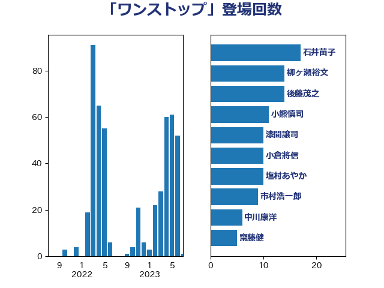

単語「ワンストップ」

| 橋本聖子 | 無所属 | 18 回 |
| 石井苗子 | 日本維新の会 | 17 回 |
| 石川博崇 | 公明党 | 15 回 |
| 柳ヶ瀬裕文 | 日本維新の会 | 12 回 |
| 小熊慎司 | 立憲民主党 | 11 回 |
| 後藤茂之 | 自由民主党 | 11 回 |
| 丸川珠代 | 自由民主党 | 8 回 |
| 柴田巧 | 日本維新の会 | 8 回 |
| 横沢高徳 | 立憲民主党 | 8 回 |
| 坂本哲志 | 自由民主党 | 7 回 |
| 山田太郎 | 自由民主党 | 7 回 |
| 平井卓也 | 自由民主党 | 7 回 |
| 菅義偉 | 自由民主党 | 7 回 |
| 高木かおり | 日本維新の会 | 7 回 |
| 小泉進次郎 | 自由民主党 | 6 回 |
| 牧島かれん | 自由民主党 | 6 回 |
| 堤かなめ | 立憲民主党 | 5 回 |
| 塩村あやか | 立憲民主党 | 5 回 |
| 宮崎政久 | 自由民主党 | 5 回 |
| 礒崎哲史 | 国民民主党 | 5 回 |
| 安江伸夫 | 公明党 | 4 回 |
| 岸田文雄 | 自由民主党 | 4 回 |
| 末松信介 | 自由民主党 | 4 回 |
| 本村伸子 | 日本共産党 | 4 回 |
| 浦野靖人 | 日本維新の会 | 4 回 |
| 野田聖子 | 自由民主党 | 4 回 |
| 麻生太郎 | 自由民主党 | 4 回 |
| 古屋範子 | 公明党 | 3 回 |
| 大島敦 | 立憲民主党 | 3 回 |
| 徳永エリ | 立憲民主党 | 3 回 |
| 田村憲久 | 自由民主党 | 3 回 |
| 荒井優 | 立憲民主党 | 3 回 |
| 野間健 | 立憲民主党 | 3 回 |
| 佐藤英道 | 公明党 | 2 回 |
| 吉川赳 | 無所属 | 2 回 |
| 吉田とも代 | 日本維新の会 | 2 回 |
| 吉田久美子 | 公明党 | 2 回 |
| 大口善徳 | 公明党 | 2 回 |
| 寺田学 | 立憲民主党 | 2 回 |
| 小宮山泰子 | 立憲民主党 | 2 回 |
| 山田美樹 | 自由民主党 | 2 回 |
| 山際大志郎 | 自由民主党 | 2 回 |
| 岩渕友 | 日本共産党 | 2 回 |
| 川合孝典 | 国民民主党 | 2 回 |
| 梶山弘志 | 自由民主党 | 2 回 |
| 河野義博 | 公明党 | 2 回 |
| 浅野哲 | 国民民主党 | 2 回 |
| 清水貴之 | 日本維新の会 | 2 回 |
| 滝沢求 | 自由民主党 | 2 回 |
| 片山さつき | 自由民主党 | 2 回 |
| 牧原秀樹 | 自由民主党 | 2 回 |
| 福島みずほ | 社会民主党 | 2 回 |
| 萩生田光一 | 自由民主党 | 2 回 |
| 藤原崇 | 自由民主党 | 2 回 |
| 西銘恒三郎 | 自由民主党 | 2 回 |
| 金城泰邦 | 公明党 | 2 回 |
| 鈴木俊一 | 自由民主党 | 2 回 |
| 階猛 | 立憲民主党 | 2 回 |
| 高橋光男 | 公明党 | 2 回 |
| 黄川田仁志 | 自由民主党 | 2 回 |
| 一谷勇一郎 | 日本維新の会 | 1 回 |
| 三ッ林裕巳 | 自由民主党 | 1 回 |
| 上川陽子 | 自由民主党 | 1 回 |
| 上月良祐 | 自由民主党 | 1 回 |
| 中川康洋 | 公明党 | 1 回 |
| 井坂信彦 | 立憲民主党 | 1 回 |
| 伊藤岳 | 日本共産党 | 1 回 |
| 佐々木さやか | 公明党 | 1 回 |
| 佐藤啓 | 自由民主党 | 1 回 |
| 古賀友一郎 | 自由民主党 | 1 回 |
| 古賀篤 | 自由民主党 | 1 回 |
| 吉良よし子 | 日本共産党 | 1 回 |
| 塩田博昭 | 公明党 | 1 回 |
| 宮本徹 | 日本共産党 | 1 回 |
| 宮路拓馬 | 自由民主党 | 1 回 |
| 山口那津男 | 公明党 | 1 回 |
| 山添拓 | 日本共産党 | 1 回 |
| 岸真紀子 | 立憲民主党 | 1 回 |
| 平木大作 | 公明党 | 1 回 |
| 平沢勝栄 | 自由民主党 | 1 回 |
| 打越さく良 | 立憲民主党 | 1 回 |
| 新妻秀規 | 公明党 | 1 回 |
| 杉本和巳 | 日本維新の会 | 1 回 |
| 柳本顕 | 自由民主党 | 1 回 |
| 梅村みずほ | 日本維新の会 | 1 回 |
| 武田良太 | 自由民主党 | 1 回 |
| 江島潔 | 自由民主党 | 1 回 |
| 池畑浩太朗 | 日本維新の会 | 1 回 |
| 河野太郎 | 自由民主党 | 1 回 |
| 熊野正士 | 公明党 | 1 回 |
| 田名部匡代 | 立憲民主党 | 1 回 |
| 田村貴昭 | 日本共産党 | 1 回 |
| 石井啓一 | 公明党 | 1 回 |
| 石垣のりこ | 立憲民主党 | 1 回 |
| 磯崎仁彦 | 自由民主党 | 1 回 |
| 福島伸享 | 無所属 | 1 回 |
| 竹谷とし子 | 公明党 | 1 回 |
| 笹川博義 | 自由民主党 | 1 回 |
| 紙智子 | 日本共産党 | 1 回 |
| 緑川貴士 | 立憲民主党 | 1 回 |
| 自見はなこ | 自由民主党 | 1 回 |
| 若松謙維 | 公明党 | 1 回 |
| 葉梨康弘 | 自由民主党 | 1 回 |
| 西岡秀子 | 国民民主党 | 1 回 |
| 西村康稔 | 自由民主党 | 1 回 |
| 西田実仁 | 公明党 | 1 回 |
| 足立康史 | 日本維新の会 | 1 回 |
| 進藤金日子 | 自由民主党 | 1 回 |
| 重徳和彦 | 立憲民主党 | 1 回 |
| 金村龍那 | 日本維新の会 | 1 回 |
| 鈴木英敬 | 自由民主党 | 1 回 |
| 長坂康正 | 自由民主党 | 1 回 |
| 阿部知子 | 立憲民主党 | 1 回 |
| 須藤元気 | 無所属 | 1 回 |
| 鰐淵洋子 | 公明党 | 1 回 |